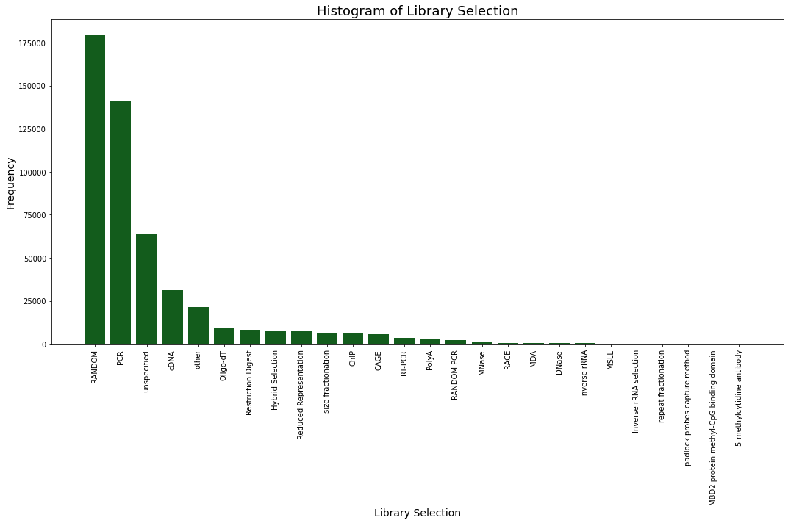
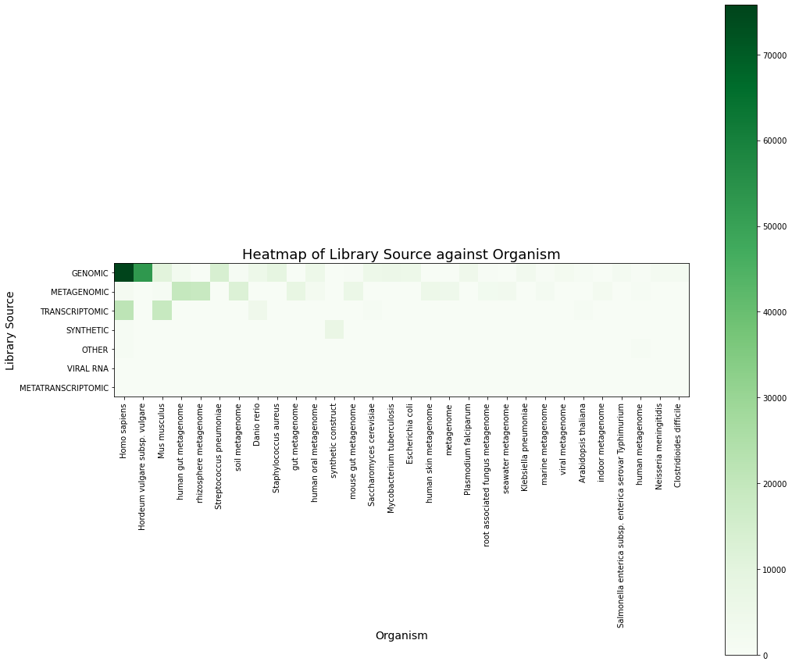
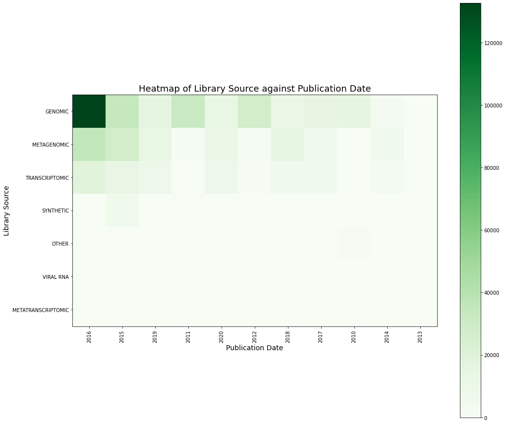

Quickstart#
Most features in pysradb are accessible both from the command-line and
as a python package. pysradb usage on the two platforms will be
displayed by selecting the corresponding tab below.
::: note ::: title Note :::
If you have any questions along the way, please head over to the
python-api-usage{.interpreted-text role=”doc”} or the
cmdline{.interpreted-text role=”doc”} for more information. You may
also wish to refer to the commands{.interpreted-text role=”doc”}
:::
Notebooks#
A Google Colaboratory version of most used commands are available in
this Colab
Notebook
. Colab runs Python 3.6 while pysradb requires Python 3.7+ and hence
the notebooks no longer run on Colab, but can be downloaded and run
locally.
The following notebooks document all the possible features of pysradb:
|
Metadata#
pysradb makes it very easy to obtain metadata from SRA/EBI:
::: tabbed Console
$ pysradb metadata SRP265425
:::
::: tabbed Python
from pysradb.sraweb import SRAweb
db = SRAweb()
df = db.metadata("SRP265425")
df
:::
Output: :
study_accession experiment_accession experiment_title experiment_desc organism_taxid organism_name library_name library_strategy library_source library_selection library_layout sample_accession sample_title instrument instrument_model instrument_model_desc total_spots total_size run_accession run_total_spots run_total_bases
SRP265425 SRX8434255 Ampliseq of SARS-CoV-2 Ampliseq of SARS-CoV-2 2697049 Severe acute respiratory syndrome coronavirus 2 63-2020-04-22 AMPLICON VIRAL RNA RT-PCR SINGLE SRS6745319 Ion Torrent S5 XL Ion Torrent S5 XL ION_TORRENT 1311358 83306910 SRR11886735 1311358 109594216
SRP265425 SRX8434254 Ampliseq of SARS-CoV-2 Ampliseq of SARS-CoV-2 2697049 Severe acute respiratory syndrome coronavirus 2 62-2020-04-22 AMPLICON VIRAL RNA RT-PCR SINGLE SRS6745320 Ion Torrent S5 XL Ion Torrent S5 XL ION_TORRENT 2614109 204278682 SRR11886736 2614109 262305651
SRP265425 SRX8434253 Ampliseq of SARS-CoV-2 Ampliseq of SARS-CoV-2 2697049 Severe acute respiratory syndrome coronavirus 2 61-2020-04-22 AMPLICON VIRAL RNA RT-PCR SINGLE SRS6745318 Ion Torrent S5 XL Ion Torrent S5 XL ION_TORRENT 2286312 183516004 SRR11886737 2286312 263304134
SRP265425 SRX8434252 Ampliseq of SARS-CoV-2 Ampliseq of SARS-CoV-2 2697049 Severe acute respiratory syndrome coronavirus 2 60-2020-04-22 AMPLICON VIRAL RNA RT-PCR SINGLE SRS6745317 Ion Torrent S5 XL Ion Torrent S5 XL ION_TORRENT 5202567 507524965 SRR11886738 5202567 781291588
SRP265425 SRX8434251 Ampliseq of SARS-CoV-2 Ampliseq of SARS-CoV-2 2697049 Severe acute respiratory syndrome coronavirus 2 38-2020-04-03 AMPLICON VIRAL RNA RT-PCR SINGLE SRS6745315 Ion Torrent S5 XL Ion Torrent S5 XL ION_TORRENT 3313960 356104406 SRR11886739 3313960 612430817
SRP265425 SRX8434250 Ampliseq of SARS-CoV-2 Ampliseq of SARS-CoV-2 2697049 Severe acute respiratory syndrome coronavirus 2 37-2020-04-03 AMPLICON VIRAL RNA RT-PCR SINGLE SRS6745316 Ion Torrent S5 XL Ion Torrent S5 XL ION_TORRENT 5155733 565882351 SRR11886740 5155733 954342917
SRP265425 SRX8434249 Ampliseq of SARS-CoV-2 Ampliseq of SARS-CoV-2 2697049 Severe acute respiratory syndrome coronavirus 2 36-2020-04-03 AMPLICON VIRAL RNA RT-PCR SINGLE SRS6745313 Ion Torrent S5 XL Ion Torrent S5 XL ION_TORRENT 1324589 175619046 SRR11886741 1324589 216531400
SRP265425 SRX8434248 Ampliseq of SARS-CoV-2 Ampliseq of SARS-CoV-2 2697049 Severe acute respiratory syndrome coronavirus 2 35-2020-04-03 AMPLICON VIRAL RNA RT-PCR SINGLE SRS6745314 Ion Torrent S5 XL Ion Torrent S5 XL ION_TORRENT 1639851 198973268 SRR11886742 1639851 245466005
SRP265425 SRX8434247 Ampliseq of SARS-CoV-2 Ampliseq of SARS-CoV-2 2697049 Severe acute respiratory syndrome coronavirus 2 68-2020-05-07 AMPLICON VIRAL RNA RT-PCR SINGLE SRS6745312 Ion Torrent S5 XL Ion Torrent S5 XL ION_TORRENT 3921389 210198580 SRR11886743 3921389 332935558
SRP265425 SRX8434246 Ampliseq of SARS-CoV-2 Ampliseq of SARS-CoV-2 2697049 Severe acute respiratory syndrome coronavirus 2 66-2020-04-22 AMPLICON VIRAL RNA RT-PCR SINGLE SRS6745311 Ion Torrent S5 XL Ion Torrent S5 XL ION_TORRENT 14295475 2150005008 SRR11886744 14295475 2967829315
SRP265425 SRX8434245 Ampliseq of SARS-CoV-2 Ampliseq of SARS-CoV-2 2697049 Severe acute respiratory syndrome coronavirus 2 65-2020-04-22 AMPLICON VIRAL RNA RT-PCR SINGLE SRS6745310 Ion Torrent S5 XL Ion Torrent S5 XL ION_TORRENT 5124692 294846140 SRR11886745 5124692 431819462
SRP265425 SRX8434244 Ampliseq of SARS-CoV-2 Ampliseq of SARS-CoV-2 2697049 Severe acute respiratory syndrome coronavirus 2 64-2020-04-22 AMPLICON VIRAL RNA RT-PCR SINGLE SRS6745309 Ion Torrent S5 XL Ion Torrent S5 XL ION_TORRENT 2986306 205666872 SRR11886746 2986306 275400959
SRP265425 SRX8434243 Ampliseq of SARS-CoV-2 Ampliseq of SARS-CoV-2 2697049 Severe acute respiratory syndrome coronavirus 2 34-2020-04-03 AMPLICON VIRAL RNA RT-PCR SINGLE SRS6745308 Ion Torrent S5 XL Ion Torrent S5 XL ION_TORRENT 1182690 59471336 SRR11886747 1182690 86350631
SRP265425 SRX8434242 Ampliseq of SARS-CoV-2 Ampliseq of SARS-CoV-2 2697049 Severe acute respiratory syndrome coronavirus 2 33-2020-04-03 AMPLICON VIRAL RNA RT-PCR SINGLE SRS6745307 Ion Torrent S5 XL Ion Torrent S5 XL ION_TORRENT 6031816 749323230 SRR11886748 6031816 928054297
Additionally to obtain locations of .fastq/.sra files and other
metadata:
pysradb makes it very easy to obtain metadata from SRA/EBI:
::: tabbed Console
$ pysradb metadata SRP265425 --detailed
:::
::: tabbed Python
from pysradb.sraweb import SRAweb
db = SRAweb()
df = db.metadata("SRP265425", detailed=True)
df
:::
Output: :
run_accession study_accession experiment_accession experiment_title experiment_desc organism_taxid organism_name library_name library_strategy library_source library_selection library_layout sample_accession sample_title instrument instrument_model instrument_model_desc total_spots total_size run_total_spots run_total_bases run_alias sra_url_alt1 sra_url_alt2 sra_url experiment_alias isolate collected_by collection_date geo_loc_name host host_disease isolation_source lat_lon BioSampleModel sra_url_alt3 ena_fastq_http ena_fastq_http_1 ena_fastq_http_2 ena_fastq_ftp ena_fastq_ftp_1 ena_fastq_ftp_2
SRR11886735 SRP265425 SRX8434255 Ampliseq of SARS-CoV-2 Ampliseq of SARS-CoV-2 2697049 Severe acute respiratory syndrome coronavirus 2 63-2020-04-22 AMPLICON VIRAL RNA RT-PCR SINGLE SRS6745319 Ion Torrent S5 XL Ion Torrent S5 XL ION_TORRENT 1311358 83306910 1311358 109594216 IonXpress_063_R_2020_04_22_15_56_22_user_GCEID-S5-58-SARS_CoV2_SA4.bam gs://sra-pub-src-9/SRR11886735/Wuhan_Hu_1_NC_045512_21500_and_subgenomics_SA4.fasta.1 https://sra-pub-sars-cov2.s3.amazonaws.com/sra-src/SRR11886735/Wuhan_Hu_1_NC_045512_21500_and_subgenomics_SA4.fasta.1 https://sra-download.ncbi.nlm.nih.gov/traces/sra0/SRR/011608/SRR11886735 GC-20 NA 02-Apr-2020 Australia: Victoria Homo sapiens COVID-19 swab NA Pathogen.cl http://ftp.sra.ebi.ac.uk/vol1/fastq/SRR118/035/SRR11886735/SRR11886735.fastq.gz era-fasp@fasp.sra.ebi.ac.uk:vol1/fastq/SRR118/035/SRR11886735/SRR11886735.fastq.gz
SRR11886736 SRP265425 SRX8434254 Ampliseq of SARS-CoV-2 Ampliseq of SARS-CoV-2 2697049 Severe acute respiratory syndrome coronavirus 2 62-2020-04-22 AMPLICON VIRAL RNA RT-PCR SINGLE SRS6745320 Ion Torrent S5 XL Ion Torrent S5 XL ION_TORRENT 2614109 204278682 2614109 262305651 IonXpress_062_R_2020_04_22_15_56_22_user_GCEID-S5-58-SARS_CoV2_SA4.bam gs://sra-pub-src-16/SRR11886736/Wuhan_Hu_1_NC_045512_21500_and_subgenomics_SA4.fasta.1 https://sra-download.ncbi.nlm.nih.gov/traces/sra46/SRZ/011886/SRR11886736/Wuhan_Hu_1_NC_045512_21500_and_subgenomics_SA4.fasta https://sra-download.ncbi.nlm.nih.gov/traces/sra50/SRR/011608/SRR11886736 GC-51 NA 14-Apr-2020 Australia: Victoria Homo sapiens COVID-19 swab NA Pathogen.cl https://sra-pub-sars-cov2.s3.amazonaws.com/sra-src/SRR11886736/Wuhan_Hu_1_NC_045512_21500_and_subgenomics_SA4.fasta.1 http://ftp.sra.ebi.ac.uk/vol1/fastq/SRR118/036/SRR11886736/SRR11886736.fastq.gz era-fasp@fasp.sra.ebi.ac.uk:vol1/fastq/SRR118/036/SRR11886736/SRR11886736.fastq.gz
SRR11886737 SRP265425 SRX8434253 Ampliseq of SARS-CoV-2 Ampliseq of SARS-CoV-2 2697049 Severe acute respiratory syndrome coronavirus 2 61-2020-04-22 AMPLICON VIRAL RNA RT-PCR SINGLE SRS6745318 Ion Torrent S5 XL Ion Torrent S5 XL ION_TORRENT 2286312 183516004 2286312 263304134 IonXpress_061_R_2020_04_22_15_56_22_user_GCEID-S5-58-SARS_CoV2_SA4.bam gs://sra-pub-src-16/SRR11886737/Wuhan_Hu_1_NC_045512_21500_and_subgenomics_SA4.fasta.1 https://sra-download.ncbi.nlm.nih.gov/traces/sra29/SRZ/011886/SRR11886737/Wuhan_Hu_1_NC_045512_21500_and_subgenomics_SA4.fasta https://sra-download.ncbi.nlm.nih.gov/traces/sra17/SRR/011608/SRR11886737 GC-24 NA 07-Apr-2020 Australia: Victoria Homo sapiens COVID-19 swab NA Pathogen.cl https://sra-pub-sars-cov2.s3.amazonaws.com/sra-src/SRR11886737/Wuhan_Hu_1_NC_045512_21500_and_subgenomics_SA4.fasta.1 http://ftp.sra.ebi.ac.uk/vol1/fastq/SRR118/037/SRR11886737/SRR11886737.fastq.gz era-fasp@fasp.sra.ebi.ac.uk:vol1/fastq/SRR118/037/SRR11886737/SRR11886737.fastq.gz
SRR11886738 SRP265425 SRX8434252 Ampliseq of SARS-CoV-2 Ampliseq of SARS-CoV-2 2697049 Severe acute respiratory syndrome coronavirus 2 60-2020-04-22 AMPLICON VIRAL RNA RT-PCR SINGLE SRS6745317 Ion Torrent S5 XL Ion Torrent S5 XL ION_TORRENT 5202567 507524965 5202567 781291588 IonXpress_060_R_2020_04_22_15_56_22_user_GCEID-S5-58-SARS_CoV2_SA4.bam gs://sra-pub-src-15/SRR11886738/IonXpress_060_R_2020_04_22_15_56_22_user_GCEID_S5_58_SARS_CoV2_SA4.bam.1 https://sra-download.ncbi.nlm.nih.gov/traces/sra69/SRZ/011886/SRR11886738/IonXpress_060_R_2020_04_22_15_56_22_user_GCEID_S5_58_SARS_CoV2_SA4.bam https://sra-download.ncbi.nlm.nih.gov/traces/sra77/SRR/011608/SRR11886738 GC-23 NA 08-Apr-2020 Australia: Victoria Homo sapiens COVID-19 swab NA Pathogen.cl https://sra-pub-sars-cov2.s3.amazonaws.com/sra-src/SRR11886738/IonXpress_060_R_2020_04_22_15_56_22_user_GCEID_S5_58_SARS_CoV2_SA4.bam.1 http://ftp.sra.ebi.ac.uk/vol1/fastq/SRR118/038/SRR11886738/SRR11886738.fastq.gz era-fasp@fasp.sra.ebi.ac.uk:vol1/fastq/SRR118/038/SRR11886738/SRR11886738.fastq.gz
SRR11886739 SRP265425 SRX8434251 Ampliseq of SARS-CoV-2 Ampliseq of SARS-CoV-2 2697049 Severe acute respiratory syndrome coronavirus 2 38-2020-04-03 AMPLICON VIRAL RNA RT-PCR SINGLE SRS6745315 Ion Torrent S5 XL Ion Torrent S5 XL ION_TORRENT 3313960 356104406 3313960 612430817 IonXpress_038_R_2020_04_03_10_09_05_user_GCEID-S5-55-SARS_CoV2_SA4.bam gs://sra-pub-src-13/SRR11886739/Wuhan_Hu_1_NC_045512_21500_and_subgenomics_SA4.fasta.1 https://sra-pub-sars-cov2.s3.amazonaws.com/sra-src/SRR11886739/Wuhan_Hu_1_NC_045512_21500_and_subgenomics_SA4.fasta.1 https://sra-download.ncbi.nlm.nih.gov/traces/sra24/SRR/011608/SRR11886739 GC-11b NA 24-Mar-2020 Australia: Victoria Homo sapiens COVID-19 swab NA Pathogen.cl http://ftp.sra.ebi.ac.uk/vol1/fastq/SRR118/039/SRR11886739/SRR11886739.fastq.gz era-fasp@fasp.sra.ebi.ac.uk:vol1/fastq/SRR118/039/SRR11886739/SRR11886739.fastq.gz
SRR11886740 SRP265425 SRX8434250 Ampliseq of SARS-CoV-2 Ampliseq of SARS-CoV-2 2697049 Severe acute respiratory syndrome coronavirus 2 37-2020-04-03 AMPLICON VIRAL RNA RT-PCR SINGLE SRS6745316 Ion Torrent S5 XL Ion Torrent S5 XL ION_TORRENT 5155733 565882351 5155733 954342917 IonXpress_037_R_2020_04_03_10_09_05_user_GCEID-S5-55-SARS_CoV2_SA4.bam gs://sra-pub-src-5/SRR11886740/IonXpress_037_R_2020_04_03_10_09_05_user_GCEID_S5_55_SARS_CoV2_SA4.bam.1 https://sra-pub-sars-cov2.s3.amazonaws.com/sra-src/SRR11886740/IonXpress_037_R_2020_04_03_10_09_05_user_GCEID_S5_55_SARS_CoV2_SA4.bam.1 https://sra-download.ncbi.nlm.nih.gov/traces/sra13/SRR/011608/SRR11886740 GC-14b NA 28-Mar-2020 Australia: Victoria Homo sapiens COVID-19 swab NA Pathogen.cl http://ftp.sra.ebi.ac.uk/vol1/fastq/SRR118/040/SRR11886740/SRR11886740.fastq.gz era-fasp@fasp.sra.ebi.ac.uk:vol1/fastq/SRR118/040/SRR11886740/SRR11886740.fastq.gz
SRR11886741 SRP265425 SRX8434249 Ampliseq of SARS-CoV-2 Ampliseq of SARS-CoV-2 2697049 Severe acute respiratory syndrome coronavirus 2 36-2020-04-03 AMPLICON VIRAL RNA RT-PCR SINGLE SRS6745313 Ion Torrent S5 XL Ion Torrent S5 XL ION_TORRENT 1324589 175619046 1324589 216531400 IonXpress_036_R_2020_04_03_10_09_05_user_GCEID-S5-55-SARS_CoV2_SA4.bam gs://sra-pub-src-11/SRR11886741/Wuhan_Hu_1_NC_045512_21500_and_subgenomics_SA4.fasta.1 https://sra-pub-sars-cov2.s3.amazonaws.com/sra-src/SRR11886741/Wuhan_Hu_1_NC_045512_21500_and_subgenomics_SA4.fasta.1 https://sra-download.ncbi.nlm.nih.gov/traces/sra57/SRR/011608/SRR11886741 GC-12 NA 24-Mar-2020 Australia: Victoria Homo sapiens COVID-19 swab NA Pathogen.cl http://ftp.sra.ebi.ac.uk/vol1/fastq/SRR118/041/SRR11886741/SRR11886741.fastq.gz era-fasp@fasp.sra.ebi.ac.uk:vol1/fastq/SRR118/041/SRR11886741/SRR11886741.fastq.gz
SRR11886742 SRP265425 SRX8434248 Ampliseq of SARS-CoV-2 Ampliseq of SARS-CoV-2 2697049 Severe acute respiratory syndrome coronavirus 2 35-2020-04-03 AMPLICON VIRAL RNA RT-PCR SINGLE SRS6745314 Ion Torrent S5 XL Ion Torrent S5 XL ION_TORRENT 1639851 198973268 1639851 245466005 IonXpress_035_R_2020_04_03_10_09_05_user_GCEID-S5-55-SARS_CoV2_SA4.bam gs://sra-pub-src-11/SRR11886742/Wuhan_Hu_1_NC_045512_21500_and_subgenomics_SA4.fasta.1 https://sra-pub-sars-cov2.s3.amazonaws.com/sra-src/SRR11886742/Wuhan_Hu_1_NC_045512_21500_and_subgenomics_SA4.fasta.1 https://sra-download.ncbi.nlm.nih.gov/traces/sra69/SRR/011608/SRR11886742 GC-13 NA 23-Mar-2020 Australia: Victoria Homo sapiens COVID-19 swab NA Pathogen.cl http://ftp.sra.ebi.ac.uk/vol1/fastq/SRR118/042/SRR11886742/SRR11886742.fastq.gz era-fasp@fasp.sra.ebi.ac.uk:vol1/fastq/SRR118/042/SRR11886742/SRR11886742.fastq.gz
SRR11886743 SRP265425 SRX8434247 Ampliseq of SARS-CoV-2 Ampliseq of SARS-CoV-2 2697049 Severe acute respiratory syndrome coronavirus 2 68-2020-05-07 AMPLICON VIRAL RNA RT-PCR SINGLE SRS6745312 Ion Torrent S5 XL Ion Torrent S5 XL ION_TORRENT 3921389 210198580 3921389 332935558 IonXpress_068_R_2020_05_07_11_47_51_user_GCEID-S5-60-SARS_CoV2_SA4.bam gs://sra-pub-src-17/SRR11886743/Wuhan_Hu_1_NC_045512_21500_and_subgenomics_SA4.fasta.1 https://sra-download.ncbi.nlm.nih.gov/traces/sra64/SRZ/011886/SRR11886743/Wuhan_Hu_1_NC_045512_21500_and_subgenomics_SA4.fasta https://sra-download.ncbi.nlm.nih.gov/traces/sra54/SRR/011608/SRR11886743 GC-55 NA 24-Apr-2020 Australia: Victoria Homo sapiens COVID-19 swab NA Pathogen.cl https://sra-pub-sars-cov2.s3.amazonaws.com/sra-src/SRR11886743/Wuhan_Hu_1_NC_045512_21500_and_subgenomics_SA4.fasta.1 http://ftp.sra.ebi.ac.uk/vol1/fastq/SRR118/043/SRR11886743/SRR11886743.fastq.gz era-fasp@fasp.sra.ebi.ac.uk:vol1/fastq/SRR118/043/SRR11886743/SRR11886743.fastq.gz
SRR11886744 SRP265425 SRX8434246 Ampliseq of SARS-CoV-2 Ampliseq of SARS-CoV-2 2697049 Severe acute respiratory syndrome coronavirus 2 66-2020-04-22 AMPLICON VIRAL RNA RT-PCR SINGLE SRS6745311 Ion Torrent S5 XL Ion Torrent S5 XL ION_TORRENT 14295475 2150005008 14295475 2967829315 IonXpress_066_R_2020_04_22_11_10_56_user_GCEID-S5-57-SARS_CoV2_SA4.fastq gs://sra-pub-src-11/SRR11886744/IonXpress_066_R_2020_04_22_11_10_56_user_GCEID-S5-57-SARS_CoV2_SA4.fastq.1 https://sra-pub-sars-cov2.s3.amazonaws.com/sra-src/SRR11886744/IonXpress_066_R_2020_04_22_11_10_56_user_GCEID-S5-57-SARS_CoV2_SA4.fastq.1 https://sra-download.ncbi.nlm.nih.gov/traces/sra20/SRR/011608/SRR11886744 GC-26 NA 07-Mar-2020 Australia: Victoria Homo sapiens COVID-19 swab NA Pathogen.cl http://ftp.sra.ebi.ac.uk/vol1/fastq/SRR118/044/SRR11886744/SRR11886744.fastq.gz era-fasp@fasp.sra.ebi.ac.uk:vol1/fastq/SRR118/044/SRR11886744/SRR11886744.fastq.gz
SRR11886745 SRP265425 SRX8434245 Ampliseq of SARS-CoV-2 Ampliseq of SARS-CoV-2 2697049 Severe acute respiratory syndrome coronavirus 2 65-2020-04-22 AMPLICON VIRAL RNA RT-PCR SINGLE SRS6745310 Ion Torrent S5 XL Ion Torrent S5 XL ION_TORRENT 5124692 294846140 5124692 431819462 IonXpress_065_R_2020_04_22_11_10_56_user_GCEID-S5-57-SARS_CoV2_SA4.bam gs://sra-pub-src-16/SRR11886745/Wuhan_Hu_1_NC_045512_21500_and_subgenomics_SA4.fasta.1 https://sra-download.ncbi.nlm.nih.gov/traces/sra69/SRZ/011886/SRR11886745/Wuhan_Hu_1_NC_045512_21500_and_subgenomics_SA4.fasta https://sra-download.ncbi.nlm.nih.gov/traces/sra19/SRR/011608/SRR11886745 GC-25 NA 10-Apr-2020 Australia: Victoria Homo sapiens COVID-19 swab NA Pathogen.cl https://sra-pub-sars-cov2.s3.amazonaws.com/sra-src/SRR11886745/Wuhan_Hu_1_NC_045512_21500_and_subgenomics_SA4.fasta.1 http://ftp.sra.ebi.ac.uk/vol1/fastq/SRR118/045/SRR11886745/SRR11886745.fastq.gz era-fasp@fasp.sra.ebi.ac.uk:vol1/fastq/SRR118/045/SRR11886745/SRR11886745.fastq.gz
SRR11886746 SRP265425 SRX8434244 Ampliseq of SARS-CoV-2 Ampliseq of SARS-CoV-2 2697049 Severe acute respiratory syndrome coronavirus 2 64-2020-04-22 AMPLICON VIRAL RNA RT-PCR SINGLE SRS6745309 Ion Torrent S5 XL Ion Torrent S5 XL ION_TORRENT 2986306 205666872 2986306 275400959 IonXpress_064_R_2020_04_22_15_56_22_user_GCEID-S5-58-SARS_CoV2_SA4.bam gs://sra-pub-src-17/SRR11886746/Wuhan_Hu_1_NC_045512_21500_and_subgenomics_SA4.fasta.1 https://sra-download.ncbi.nlm.nih.gov/traces/sra59/SRZ/011886/SRR11886746/Wuhan_Hu_1_NC_045512_21500_and_subgenomics_SA4.fasta https://sra-download.ncbi.nlm.nih.gov/traces/sra47/SRR/011608/SRR11886746 GC-21 NA 03-Apr-2020 Australia: Victoria Homo sapiens COVID-19 swab NA Pathogen.cl https://sra-pub-sars-cov2.s3.amazonaws.com/sra-src/SRR11886746/Wuhan_Hu_1_NC_045512_21500_and_subgenomics_SA4.fasta.1 http://ftp.sra.ebi.ac.uk/vol1/fastq/SRR118/046/SRR11886746/SRR11886746.fastq.gz era-fasp@fasp.sra.ebi.ac.uk:vol1/fastq/SRR118/046/SRR11886746/SRR11886746.fastq.gz
SRR11886747 SRP265425 SRX8434243 Ampliseq of SARS-CoV-2 Ampliseq of SARS-CoV-2 2697049 Severe acute respiratory syndrome coronavirus 2 34-2020-04-03 AMPLICON VIRAL RNA RT-PCR SINGLE SRS6745308 Ion Torrent S5 XL Ion Torrent S5 XL ION_TORRENT 1182690 59471336 1182690 86350631 IonXpress_034_R_2020_04_03_10_09_05_user_GCEID-S5-55-SARS_CoV2_SA4.bam gs://sra-pub-src-16/SRR11886747/Wuhan_Hu_1_NC_045512_21500_and_subgenomics_SA4.fasta.1 https://sra-download.ncbi.nlm.nih.gov/traces/sra77/SRZ/011886/SRR11886747/Wuhan_Hu_1_NC_045512_21500_and_subgenomics_SA4.fasta https://sra-download.ncbi.nlm.nih.gov/traces/sra13/SRR/011608/SRR11886747 GC-11a NA 24-Mar-2020 Australia: Victoria Homo sapiens COVID-19 swab NA Pathogen.cl https://sra-pub-sars-cov2.s3.amazonaws.com/sra-src/SRR11886747/Wuhan_Hu_1_NC_045512_21500_and_subgenomics_SA4.fasta.1 http://ftp.sra.ebi.ac.uk/vol1/fastq/SRR118/047/SRR11886747/SRR11886747.fastq.gz era-fasp@fasp.sra.ebi.ac.uk:vol1/fastq/SRR118/047/SRR11886747/SRR11886747.fastq.gz
SRR11886748 SRP265425 SRX8434242 Ampliseq of SARS-CoV-2 Ampliseq of SARS-CoV-2 2697049 Severe acute respiratory syndrome coronavirus 2 33-2020-04-03 AMPLICON VIRAL RNA RT-PCR SINGLE SRS6745307 Ion Torrent S5 XL Ion Torrent S5 XL ION_TORRENT 6031816 749323230 6031816 928054297 IonXpress_033_R_2020_04_03_10_09_05_user_GCEID-S5-55-SARS_CoV2_SA4.bam gs://sra-pub-src-15/SRR11886748/IonXpress_033_R_2020_04_03_10_09_05_user_GCEID_S5_55_SARS_CoV2_SA4.bam.1 https://sra-download.ncbi.nlm.nih.gov/traces/sra43/SRZ/011886/SRR11886748/IonXpress_033_R_2020_04_03_10_09_05_user_GCEID_S5_55_SARS_CoV2_SA4.bam https://sra-download.ncbi.nlm.nih.gov/traces/sra66/SRR/011608/SRR11886748 GC-14a NA 28-Mar-2020 Australia: Victoria Homo sapiens COVID-19 swab NA Pathogen.cl https://sra-pub-sars-cov2.s3.amazonaws.com/sra-src/SRR11886748/IonXpress_033_R_2020_04_03_10_09_05_user_GCEID_S5_55_SARS_CoV2_SA4.bam.1 http://ftp.sra.ebi.ac.uk/vol1/fastq/SRR118/048/SRR11886748/SRR11886748.fastq.gz era-fasp@fasp.sra.ebi.ac.uk:vol1/fastq/SRR118/048/SRR11886748/SRR11886748.fastq.gz
Converting between accession numbers#
pysradb provides a suite of commands for interoperability between
conversion numbers.
Convert SRP to SRX#
::: tabbed Console
$ pysradb srp-to-srx SRP098789
:::
::: tabbed Python
from pysradb.sraweb import SRAweb
db = SRAweb()
df = db.srp-to-srx("SRP098789")
df
:::
Output: :
study_accession experiment_accession experiment_title experiment_desc organism_taxid organism_name library_strategy library_source library_selection sample_accession sample_title instrument total_spots total_size run_accession run_total_spots run_total_bases study_accesssion
SRP098789 SRX2536428 GSM2476022: vehicle, 60 min, rep 5-mRNAseq; Homo sapiens; RNA-Seq GSM2476022: vehicle, 60 min, rep 5-mRNAseq; Homo sapiens; RNA-Seq 9606 Homo sapiens RNA-Seq TRANSCRIPTOMIC cDNA SRS1956378 Illumina HiSeq 2500 69422931 1545681856 SRR5227313 69422931 3540569481 SRP098789
SRP098789 SRX2536427 GSM2476021: PF-06446846, 60 min, rep 5 -mRNA-seq; Homo sapiens; OTHER GSM2476021: PF-06446846, 60 min, rep 5 -mRNA-seq; Homo sapiens; OTHER 9606 Homo sapiens OTHER TRANSCRIPTOMIC other SRS1956377 Illumina HiSeq 2500 58065134 1302369810 SRR5227312 58065134 2961321834 SRP098789
SRP098789 SRX2536426 GSM2476020: vehicle, 60 min, rep 4-mRNAseq; Homo sapiens; RNA-Seq GSM2476020: vehicle, 60 min, rep 4-mRNAseq; Homo sapiens; RNA-Seq 9606 Homo sapiens RNA-Seq TRANSCRIPTOMIC cDNA SRS1956376 Illumina HiSeq 2500 63720205 1416818619 SRR5227311 63720205 3249730455 SRP098789
SRP098789 SRX2536425 GSM2476019: PF-06446846, 60 min, rep 4 -mRNA-seq; Homo sapiens; OTHER GSM2476019: PF-06446846, 60 min, rep 4 -mRNA-seq; Homo sapiens; OTHER 9606 Homo sapiens OTHER TRANSCRIPTOMIC other SRS1956375 Illumina HiSeq 2500 66363585 1482728577 SRR5227310 66363585 3384542835 SRP098789
SRP098789 SRX2536424 GSM2476018: vehicle, 60 min, rep 5-Ribo-seq; Homo sapiens; RNA-Seq GSM2476018: vehicle, 60 min, rep 5-Ribo-seq; Homo sapiens; RNA-Seq 9606 Homo sapiens RNA-Seq TRANSCRIPTOMIC cDNA SRS1956374 Illumina HiSeq 2500 40062613 904488287 SRR5227309 40062613 2043193263 SRP098789
SRP098789 SRX2536423 GSM2476017: 1.5 ?M PF-067446846, 60 min, rep 5 -riboseq; Homo sapiens; OTHER GSM2476017: 1.5 ?M PF-067446846, 60 min, rep 5 -riboseq; Homo sapiens; OTHER 9606 Homo sapiens OTHER TRANSCRIPTOMIC other SRS1956373 Illumina HiSeq 2500 65591217 1499668100 SRR5227308 65591217 3345152067 SRP098789
SRP098789 SRX2536422 GSM2476016: Vehicle, 60 min, rep 4-ribo-seq; Homo sapiens; RNA-Seq GSM2476016: Vehicle, 60 min, rep 4-ribo-seq; Homo sapiens; RNA-Seq 9606 Homo sapiens RNA-Seq TRANSCRIPTOMIC cDNA SRS1956372 Illumina HiSeq 2500 66480991 1564636133 SRR5227307 66480991 3390530541 SRP098789
SRP098789 SRX2536421 GSM2476015: 1.5 ?M PF-067446846, 60 min, rep 4 -riboseq; Homo sapiens; OTHER GSM2476015: 1.5 ?M PF-067446846, 60 min, rep 4 -riboseq; Homo sapiens; OTHER 9606 Homo sapiens OTHER TRANSCRIPTOMIC other SRS1956371 Illumina HiSeq 2500 57588015 1357395400 SRR5227306 57588015 2936988765 SRP098789
SRP098789 SRX2536420 GSM2476014: vehicle, 60 min rep 3; Homo sapiens; OTHER GSM2476014: vehicle, 60 min rep 3; Homo sapiens; OTHER 9606 Homo sapiens OTHER TRANSCRIPTOMIC other SRS1956370 Illumina HiSeq 2000 48405034 1530784033 SRR5227305 48405034 2420251700 SRP098789
SRP098789 SRX2536419 GSM2476013: vehicle, 60 min rep 2; Homo sapiens; OTHER GSM2476013: vehicle, 60 min rep 2; Homo sapiens; OTHER 9606 Homo sapiens OTHER TRANSCRIPTOMIC other SRS1956369 Illumina HiSeq 2000 47139057 1489018603 SRR5227304 47139057 2356952850 SRP098789
SRP098789 SRX2536418 GSM2476012: vehicle, 60 min rep 1; Homo sapiens; OTHER GSM2476012: vehicle, 60 min rep 1; Homo sapiens; OTHER 9606 Homo sapiens OTHER TRANSCRIPTOMIC other SRS1956368 Illumina HiSeq 2000 50956178 1495757884 SRR5227303 50956178 2547808900 SRP098789
SRP098789 SRX2536417 GSM2476011: 0.3 ?M PF-067446846, 60 min, rep 3; Homo sapiens; OTHER GSM2476011: 0.3 ?M PF-067446846, 60 min, rep 3; Homo sapiens; OTHER 9606 Homo sapiens OTHER TRANSCRIPTOMIC other SRS1956367 Illumina HiSeq 2000 44258180 1404548468 SRR5227302 44258180 2212909000 SRP098789
SRP098789 SRX2536416 GSM2476010: 0.3 ?M PF-067446846, 60 min, rep 2; Homo sapiens; OTHER GSM2476010: 0.3 ?M PF-067446846, 60 min, rep 2; Homo sapiens; OTHER 9606 Homo sapiens OTHER TRANSCRIPTOMIC other SRS1956366 Illumina HiSeq 2000 49129512 1536091510 SRR5227301 49129512 2456475600 SRP098789
SRP098789 SRX2536415 GSM2476009: 0.3 ?M PF-067446846, 60 min, rep 1; Homo sapiens; OTHER GSM2476009: 0.3 ?M PF-067446846, 60 min, rep 1; Homo sapiens; OTHER 9606 Homo sapiens OTHER TRANSCRIPTOMIC other SRS1956365 Illumina HiSeq 2000 30043362 903983724 SRR5227300 30043362 1502168100 SRP098789
SRP098789 SRX2536414 GSM2476008: 1.5 ?M PF-067446846, 60 min, rep 3; Homo sapiens; OTHER GSM2476008: 1.5 ?M PF-067446846, 60 min, rep 3; Homo sapiens; OTHER 9606 Homo sapiens OTHER TRANSCRIPTOMIC other SRS1956364 Illumina HiSeq 2000 48766213 1530350854 SRR5227299 48766213 2438310650 SRP098789
SRP098789 SRX2536413 GSM2476007: 1.5 ?M PF-067446846, 60 min, rep 2; Homo sapiens; OTHER GSM2476007: 1.5 ?M PF-067446846, 60 min, rep 2; Homo sapiens; OTHER 9606 Homo sapiens OTHER TRANSCRIPTOMIC other SRS1956363 Illumina HiSeq 2000 49334392 1475414353 SRR5227298 49334392 2466719600 SRP098789
SRP098789 SRX2536412 GSM2476006: 1.5 ?M PF-067446846, 60 min, rep 1; Homo sapiens; OTHER GSM2476006: 1.5 ?M PF-067446846, 60 min, rep 1; Homo sapiens; OTHER 9606 Homo sapiens OTHER TRANSCRIPTOMIC other SRS1956362 Illumina HiSeq 2000 60381365 1801283052 SRR5227297 60381365 3019068250 SRP098789
SRP098789 SRX2536411 GSM2476005: vehicle, 10 min rep 3; Homo sapiens; OTHER GSM2476005: vehicle, 10 min rep 3; Homo sapiens; OTHER 9606 Homo sapiens OTHER TRANSCRIPTOMIC other SRS1956361 Illumina HiSeq 2000 52737784 1644829192 SRR5227296 52737784 2636889200 SRP098789
SRP098789 SRX2536410 GSM2476004: vehicle, 10 min rep 2; Homo sapiens; OTHER GSM2476004: vehicle, 10 min rep 2; Homo sapiens; OTHER 9606 Homo sapiens OTHER TRANSCRIPTOMIC other SRS1956360 Illumina HiSeq 2000 46137148 1455541408 SRR5227295 46137148 2306857400 SRP098789
SRP098789 SRX2536409 GSM2476003: vehicle, 10 min rep 1; Homo sapiens; OTHER GSM2476003: vehicle, 10 min rep 1; Homo sapiens; OTHER 9606 Homo sapiens OTHER TRANSCRIPTOMIC other SRS1956359 Illumina HiSeq 2000 76002122 1552821132 SRR5227294 76002122 3800106100 SRP098789
SRP098789 SRX2536408 GSM2476002: 0.3 ?M PF-067446846, 10 min, rep 3; Homo sapiens; OTHER GSM2476002: 0.3 ?M PF-067446846, 10 min, rep 3; Homo sapiens; OTHER 9606 Homo sapiens OTHER TRANSCRIPTOMIC other SRS1956358 Illumina HiSeq 2000 42709138 1338829352 SRR5227293 42709138 2135456900 SRP098789
SRP098789 SRX2536407 GSM2476001: 0.3 ?M PF-067446846, 10 min, rep 2; Homo sapiens; OTHER GSM2476001: 0.3 ?M PF-067446846, 10 min, rep 2; Homo sapiens; OTHER 9606 Homo sapiens OTHER TRANSCRIPTOMIC other SRS1956357 Illumina HiSeq 2000 60552437 1875910244 SRR5227292 60552437 3027621850 SRP098789
SRP098789 SRX2536406 GSM2476000: 0.3 ?M PF-067446846, 10 min, rep 1; Homo sapiens; OTHER GSM2476000: 0.3 ?M PF-067446846, 10 min, rep 1; Homo sapiens; OTHER 9606 Homo sapiens OTHER TRANSCRIPTOMIC other SRS1956356 Illumina HiSeq 2000 41143319 843881081 SRR5227291 41143319 2057165950 SRP098789
SRP098789 SRX2536405 GSM2475999: 1.5 ?M PF-067446846, 10 min, rep 3; Homo sapiens; OTHER GSM2475999: 1.5 ?M PF-067446846, 10 min, rep 3; Homo sapiens; OTHER 9606 Homo sapiens OTHER TRANSCRIPTOMIC other SRS1956355 Illumina HiSeq 2000 40462973 1287284933 SRR5227290 40462973 2023148650 SRP098789
SRP098789 SRX2536404 GSM2475998: 1.5 ?M PF-067446846, 10 min, rep 2; Homo sapiens; OTHER GSM2475998: 1.5 ?M PF-067446846, 10 min, rep 2; Homo sapiens; OTHER 9606 Homo sapiens OTHER TRANSCRIPTOMIC other SRS1956354 Illumina HiSeq 2000 41657461 1360366732 SRR5227289 41657461 2082873050 SRP098789
SRP098789 SRX2536403 GSM2475997: 1.5 ?M PF-067446846, 10 min, rep 1; Homo sapiens; OTHER GSM2475997: 1.5 ?M PF-067446846, 10 min, rep 1; Homo sapiens; OTHER 9606 Homo sapiens OTHER TRANSCRIPTOMIC other SRS1956353 Illumina HiSeq 2000 42082855 916745706 SRR5227288 42082855 2104142750 SRP098789
|
Convert GSE to SRP#
::: tabbed Console
$ pysradb srp-to-srx SRP098789
:::
::: tabbed Python
from pysradb.sraweb import SRAweb
db = SRAweb()
df = db.srp-to-srx("SRP098789")
df
:::
Output: :
study_accession experiment_accession experiment_title experiment_desc organism_taxid organism_name library_strategy library_source library_selection sample_accession sample_title instrument total_spots total_size run_accession run_total_spots run_total_bases study_accesssion
SRP098789 SRX2536428 GSM2476022: vehicle, 60 min, rep 5-mRNAseq; Homo sapiens; RNA-Seq GSM2476022: vehicle, 60 min, rep 5-mRNAseq; Homo sapiens; RNA-Seq 9606 Homo sapiens RNA-Seq TRANSCRIPTOMIC cDNA SRS1956378 Illumina HiSeq 2500 69422931 1545681856 SRR5227313 69422931 3540569481 SRP098789
SRP098789 SRX2536427 GSM2476021: PF-06446846, 60 min, rep 5 -mRNA-seq; Homo sapiens; OTHER GSM2476021: PF-06446846, 60 min, rep 5 -mRNA-seq; Homo sapiens; OTHER 9606 Homo sapiens OTHER TRANSCRIPTOMIC other SRS1956377 Illumina HiSeq 2500 58065134 1302369810 SRR5227312 58065134 2961321834 SRP098789
SRP098789 SRX2536426 GSM2476020: vehicle, 60 min, rep 4-mRNAseq; Homo sapiens; RNA-Seq GSM2476020: vehicle, 60 min, rep 4-mRNAseq; Homo sapiens; RNA-Seq 9606 Homo sapiens RNA-Seq TRANSCRIPTOMIC cDNA SRS1956376 Illumina HiSeq 2500 63720205 1416818619 SRR5227311 63720205 3249730455 SRP098789
SRP098789 SRX2536425 GSM2476019: PF-06446846, 60 min, rep 4 -mRNA-seq; Homo sapiens; OTHER GSM2476019: PF-06446846, 60 min, rep 4 -mRNA-seq; Homo sapiens; OTHER 9606 Homo sapiens OTHER TRANSCRIPTOMIC other SRS1956375 Illumina HiSeq 2500 66363585 1482728577 SRR5227310 66363585 3384542835 SRP098789
SRP098789 SRX2536424 GSM2476018: vehicle, 60 min, rep 5-Ribo-seq; Homo sapiens; RNA-Seq GSM2476018: vehicle, 60 min, rep 5-Ribo-seq; Homo sapiens; RNA-Seq 9606 Homo sapiens RNA-Seq TRANSCRIPTOMIC cDNA SRS1956374 Illumina HiSeq 2500 40062613 904488287 SRR5227309 40062613 2043193263 SRP098789
SRP098789 SRX2536423 GSM2476017: 1.5 ?M PF-067446846, 60 min, rep 5 -riboseq; Homo sapiens; OTHER GSM2476017: 1.5 ?M PF-067446846, 60 min, rep 5 -riboseq; Homo sapiens; OTHER 9606 Homo sapiens OTHER TRANSCRIPTOMIC other SRS1956373 Illumina HiSeq 2500 65591217 1499668100 SRR5227308 65591217 3345152067 SRP098789
SRP098789 SRX2536422 GSM2476016: Vehicle, 60 min, rep 4-ribo-seq; Homo sapiens; RNA-Seq GSM2476016: Vehicle, 60 min, rep 4-ribo-seq; Homo sapiens; RNA-Seq 9606 Homo sapiens RNA-Seq TRANSCRIPTOMIC cDNA SRS1956372 Illumina HiSeq 2500 66480991 1564636133 SRR5227307 66480991 3390530541 SRP098789
SRP098789 SRX2536421 GSM2476015: 1.5 ?M PF-067446846, 60 min, rep 4 -riboseq; Homo sapiens; OTHER GSM2476015: 1.5 ?M PF-067446846, 60 min, rep 4 -riboseq; Homo sapiens; OTHER 9606 Homo sapiens OTHER TRANSCRIPTOMIC other SRS1956371 Illumina HiSeq 2500 57588015 1357395400 SRR5227306 57588015 2936988765 SRP098789
SRP098789 SRX2536420 GSM2476014: vehicle, 60 min rep 3; Homo sapiens; OTHER GSM2476014: vehicle, 60 min rep 3; Homo sapiens; OTHER 9606 Homo sapiens OTHER TRANSCRIPTOMIC other SRS1956370 Illumina HiSeq 2000 48405034 1530784033 SRR5227305 48405034 2420251700 SRP098789
SRP098789 SRX2536419 GSM2476013: vehicle, 60 min rep 2; Homo sapiens; OTHER GSM2476013: vehicle, 60 min rep 2; Homo sapiens; OTHER 9606 Homo sapiens OTHER TRANSCRIPTOMIC other SRS1956369 Illumina HiSeq 2000 47139057 1489018603 SRR5227304 47139057 2356952850 SRP098789
SRP098789 SRX2536418 GSM2476012: vehicle, 60 min rep 1; Homo sapiens; OTHER GSM2476012: vehicle, 60 min rep 1; Homo sapiens; OTHER 9606 Homo sapiens OTHER TRANSCRIPTOMIC other SRS1956368 Illumina HiSeq 2000 50956178 1495757884 SRR5227303 50956178 2547808900 SRP098789
SRP098789 SRX2536417 GSM2476011: 0.3 ?M PF-067446846, 60 min, rep 3; Homo sapiens; OTHER GSM2476011: 0.3 ?M PF-067446846, 60 min, rep 3; Homo sapiens; OTHER 9606 Homo sapiens OTHER TRANSCRIPTOMIC other SRS1956367 Illumina HiSeq 2000 44258180 1404548468 SRR5227302 44258180 2212909000 SRP098789
SRP098789 SRX2536416 GSM2476010: 0.3 ?M PF-067446846, 60 min, rep 2; Homo sapiens; OTHER GSM2476010: 0.3 ?M PF-067446846, 60 min, rep 2; Homo sapiens; OTHER 9606 Homo sapiens OTHER TRANSCRIPTOMIC other SRS1956366 Illumina HiSeq 2000 49129512 1536091510 SRR5227301 49129512 2456475600 SRP098789
SRP098789 SRX2536415 GSM2476009: 0.3 ?M PF-067446846, 60 min, rep 1; Homo sapiens; OTHER GSM2476009: 0.3 ?M PF-067446846, 60 min, rep 1; Homo sapiens; OTHER 9606 Homo sapiens OTHER TRANSCRIPTOMIC other SRS1956365 Illumina HiSeq 2000 30043362 903983724 SRR5227300 30043362 1502168100 SRP098789
SRP098789 SRX2536414 GSM2476008: 1.5 ?M PF-067446846, 60 min, rep 3; Homo sapiens; OTHER GSM2476008: 1.5 ?M PF-067446846, 60 min, rep 3; Homo sapiens; OTHER 9606 Homo sapiens OTHER TRANSCRIPTOMIC other SRS1956364 Illumina HiSeq 2000 48766213 1530350854 SRR5227299 48766213 2438310650 SRP098789
SRP098789 SRX2536413 GSM2476007: 1.5 ?M PF-067446846, 60 min, rep 2; Homo sapiens; OTHER GSM2476007: 1.5 ?M PF-067446846, 60 min, rep 2; Homo sapiens; OTHER 9606 Homo sapiens OTHER TRANSCRIPTOMIC other SRS1956363 Illumina HiSeq 2000 49334392 1475414353 SRR5227298 49334392 2466719600 SRP098789
SRP098789 SRX2536412 GSM2476006: 1.5 ?M PF-067446846, 60 min, rep 1; Homo sapiens; OTHER GSM2476006: 1.5 ?M PF-067446846, 60 min, rep 1; Homo sapiens; OTHER 9606 Homo sapiens OTHER TRANSCRIPTOMIC other SRS1956362 Illumina HiSeq 2000 60381365 1801283052 SRR5227297 60381365 3019068250 SRP098789
SRP098789 SRX2536411 GSM2476005: vehicle, 10 min rep 3; Homo sapiens; OTHER GSM2476005: vehicle, 10 min rep 3; Homo sapiens; OTHER 9606 Homo sapiens OTHER TRANSCRIPTOMIC other SRS1956361 Illumina HiSeq 2000 52737784 1644829192 SRR5227296 52737784 2636889200 SRP098789
SRP098789 SRX2536410 GSM2476004: vehicle, 10 min rep 2; Homo sapiens; OTHER GSM2476004: vehicle, 10 min rep 2; Homo sapiens; OTHER 9606 Homo sapiens OTHER TRANSCRIPTOMIC other SRS1956360 Illumina HiSeq 2000 46137148 1455541408 SRR5227295 46137148 2306857400 SRP098789
SRP098789 SRX2536409 GSM2476003: vehicle, 10 min rep 1; Homo sapiens; OTHER GSM2476003: vehicle, 10 min rep 1; Homo sapiens; OTHER 9606 Homo sapiens OTHER TRANSCRIPTOMIC other SRS1956359 Illumina HiSeq 2000 76002122 1552821132 SRR5227294 76002122 3800106100 SRP098789
SRP098789 SRX2536408 GSM2476002: 0.3 ?M PF-067446846, 10 min, rep 3; Homo sapiens; OTHER GSM2476002: 0.3 ?M PF-067446846, 10 min, rep 3; Homo sapiens; OTHER 9606 Homo sapiens OTHER TRANSCRIPTOMIC other SRS1956358 Illumina HiSeq 2000 42709138 1338829352 SRR5227293 42709138 2135456900 SRP098789
SRP098789 SRX2536407 GSM2476001: 0.3 ?M PF-067446846, 10 min, rep 2; Homo sapiens; OTHER GSM2476001: 0.3 ?M PF-067446846, 10 min, rep 2; Homo sapiens; OTHER 9606 Homo sapiens OTHER TRANSCRIPTOMIC other SRS1956357 Illumina HiSeq 2000 60552437 1875910244 SRR5227292 60552437 3027621850 SRP098789
SRP098789 SRX2536406 GSM2476000: 0.3 ?M PF-067446846, 10 min, rep 1; Homo sapiens; OTHER GSM2476000: 0.3 ?M PF-067446846, 10 min, rep 1; Homo sapiens; OTHER 9606 Homo sapiens OTHER TRANSCRIPTOMIC other SRS1956356 Illumina HiSeq 2000 41143319 843881081 SRR5227291 41143319 2057165950 SRP098789
SRP098789 SRX2536405 GSM2475999: 1.5 ?M PF-067446846, 10 min, rep 3; Homo sapiens; OTHER GSM2475999: 1.5 ?M PF-067446846, 10 min, rep 3; Homo sapiens; OTHER 9606 Homo sapiens OTHER TRANSCRIPTOMIC other SRS1956355 Illumina HiSeq 2000 40462973 1287284933 SRR5227290 40462973 2023148650 SRP098789
SRP098789 SRX2536404 GSM2475998: 1.5 ?M PF-067446846, 10 min, rep 2; Homo sapiens; OTHER GSM2475998: 1.5 ?M PF-067446846, 10 min, rep 2; Homo sapiens; OTHER 9606 Homo sapiens OTHER TRANSCRIPTOMIC other SRS1956354 Illumina HiSeq 2000 41657461 1360366732 SRR5227289 41657461 2082873050 SRP098789
SRP098789 SRX2536403 GSM2475997: 1.5 ?M PF-067446846, 10 min, rep 1; Homo sapiens; OTHER GSM2475997: 1.5 ?M PF-067446846, 10 min, rep 1; Homo sapiens; OTHER 9606 Homo sapiens OTHER TRANSCRIPTOMIC other SRS1956353 Illumina HiSeq 2000 42082855 916745706 SRR5227288 42082855 2104142750 SRP098789
|
Downloading sequencing data#
pysradb can alse be used to download either .fastq or .sra
filesboth from ENA and SRA.
Downloading via accession number#
::: tabbed Console
$ pysradb download SRP098789
:::
::: tabbed Python
from pysradb.sraweb import SRAweb
db = SRAweb()
db.download("SRP098789")
:::
|
It is also possible to pipe the dataframe from [metadata]{.title-ref} or [search]{.title-ref} to download, after filtering the dataframe entries:
::: tabbed Console
$ pysradb metadata SRP276671 --detailed | pysradb download
:::
::: tabbed Python
from pysradb.sraweb import SRAweb
db = SRAweb()
df = db.sra_metadata('SRP016501', detailed=True)
db.download(df=df)
:::
|
Ultrafast fastq downloads#
With
aspera-client
installed, pysradb canan perform ultra fast downloads:
To download all original fastqs with [aspera-client]{.title-ref} installed utilizing 8 threads:
::: tabbed Console
$ pysradb download -t 8 --use_ascp -p SRP002605
:::
::: tabbed Python
from pysradb.sraweb import SRAweb
db = SRAweb()
db.download("SRP098789", use_ascp=True, threads=8)
:::
Refer to the notebook for (shallow) time benchmarks.
|
Search#
Retrieving metadata by accession number#
::: tabbed Console
$ pysradb metadata SRP276671
:::
::: tabbed Python
from pysradb.sraweb import SRAweb
db = SRAweb()
df = db.sra_metadata('SRP016501')
df
:::
Output: :
study_accession experiment_accession experiment_title experiment_desc organism_taxid organism_name library_strategy library_source library_selection sample_accession sample_title instrument total_spots total_size run_accession run_total_spots run_total_bases
SRP276671 SRX8978626 hCov-19/Canada/ON/VIDO01/2020 (EPI ISL 413015) hCov-19/Canada/ON/VIDO01/2020 (EPI ISL 413015) 2697049 Severe acute respiratory syndrome coronavirus 2 WGS GENOMIC RT-PCR SRS7233795 MinION 96202 79690689 SRR12486810 96202 86575096
SRP276671 SRX8909137 hCoV-19/Canada/ON-VIDO-01/2020 (EPI_ISL_425177) hCoV-19/Canada/ON-VIDO-01/2020 (EPI_ISL_425177) 2697049 Severe acute respiratory syndrome coronavirus 2 WGS GENOMIC RT-PCR SRS7166526 Illumina MiSeq 866225 173474986 SRR12412952 866225 338457239
|
::: note ::: title Note :::
[pysradb]{.title-ref}, when used in python, returns the retrieved metadata as a [pandas]{.title-ref} DataFrame, with all regular select/query operations available through [pandas]{.title-ref}. :::
|
For more detailed metadata (including download URLs), we can include the [detailed]{.title-ref} flag:
::: tabbed Console
$ pysradb metadata SRP276671 --detailed
:::
::: tabbed Python
from pysradb.sraweb import SRAweb
db = SRAweb()
df = db.sra_metadata('SRP016501', detailed=True)
df
:::
Output: :
study_accession experiment_accession experiment_title experiment_desc organism_taxid organism_name library_strategy library_source library_selection sample_accession sample_title instrument total_spots total_size run_accession run_total_spots run_total_bases run_alias sra_url_alt sra_url experiment_alias isolate collected_by collection_date geo_loc_name host host_disease isolation_source lat_lon host_sex host_subject_id passage_history BioSampleModel sra_url_alt1 sra_url_alt2 sra_url_alt3 ena_fastq_http ena_fastq_ftp
SRP276671 SRX8978626 hCov-19/Canada/ON/VIDO01/2020 (EPI ISL 413015) hCov-19/Canada/ON/VIDO01/2020 (EPI ISL 413015) 2697049 Severe acute respiratory syndrome coronavirus 2 WGS GENOMIC RT-PCR SRS7233795 N/A MinION 96202 79690689 SRR12486810 96202 86575096 VIDO-01.tar.gz https://sra-download.ncbi.nlm.nih.gov/traces/sra1/SRZ/012486/SRR12486810/VIDO-01.tar.gz https://sra-download.ncbi.nlm.nih.gov/traces/sra78/SRR/012194/SRR12486810 N/A ON-VIDO-01-P3 Public Health Ontario 2020-01-23 Canada: Ontario Homo sapiens COVID-19 missing missing male VIDO-01 Vero E6 P3 Pathogen.cl N/A N/A N/A http://ftp.sra.ebi.ac.uk/vol1/fastq/SRR124/010/SRR12486810/SRR12486810_1.fastq.gz era-fasp@fasp.sra.ebi.ac.uk:vol1/fastq/SRR124/010/SRR12486810/SRR12486810_1.fastq.gz
SRP276671 SRX8909137 hCoV-19/Canada/ON-VIDO-01/2020 (EPI_ISL_425177) hCoV-19/Canada/ON-VIDO-01/2020 (EPI_ISL_425177) 2697049 Severe acute respiratory syndrome coronavirus 2 WGS GENOMIC RT-PCR SRS7166526 N/A Illumina MiSeq 866225 173474986 SRR12412952 866225 338457239 SP-2_R1.fastq.gz N/A https://sra-download.ncbi.nlm.nih.gov/traces/sra48/SRR/012122/SRR12412952 N/A ON-VIDO-01-P2 Public Health Ontario 2020-01-23 Canada: Ontario Homo sapiens COVID-19 missing missing male VIDO-01 Vero E6 P2 Pathogen.cl gs://sra-pub-src-10/SRR12412952/SP-2_R2.fastq.1 s3://sra-pub-src-10/SRR12412952/SP-2_R2.fastq.1 https://sra-pub-sars-cov2.s3.amazonaws.com/sra-src/SRR12412952/SP-2_R2.fastq.1 http://ftp.sra.ebi.ac.uk/vol1/fastq/SRR124/052/SRR12412952/SRR12412952.fastq.gz era-fasp@fasp.sra.ebi.ac.uk:vol1/fastq/SRR124/052/SRR12412952/SRR12412952.fastq.gz
|
Searching SRA/ENA databases and retrieving metadata#
Let’s take for example we are interested in coronavirus sequences published on Short Reads Archive (SRA) in the first week of August 2020.
::: tabbed Console
$ pysradb search -q coronavirus --publication-date 01-08-2020:07-08-2020 --max 10000
:::
::: tabbed Python
from pysradb.search import SraSearch
instance = SraSearch(return_max=10000, query="coronavirus", publication_date="01-08-2020:07-08-2020")
instance.search()
instance.get_df()
:::
Output (showing only the first 10 entries): :
study_accession experiment_accession experiment_title sample_taxon_id sample_scientific_name experiment_library_strategy experiment_library_source experiment_library_selection sample_accession sample_alias experiment_instrument_model pool_member_spots run_1_size run_1_accession run_1_total_spots run_1_total_bases pmid
SRP270658 SRX8679965 GSM4658808: SARS-CoV-2-infected 24h 3; Chlorocebus sabaeus; Severe acute respiratory syndrome coronavirus 2; RNA-Seq 60711 Chlorocebus sabaeus RNA-Seq TRANSCRIPTOMIC cDNA SRS6959042 GSM4658808 NextSeq 500 104223040 9743267247 SRR12164500 104223040 31475358080 11295714
SRP270658 SRX8679964 GSM4658807: SARS-CoV-2-infected 24h 2; Chlorocebus sabaeus; Severe acute respiratory syndrome coronavirus 2; RNA-Seq 60711 Chlorocebus sabaeus RNA-Seq TRANSCRIPTOMIC cDNA SRS6959041 GSM4658807 NextSeq 500 92813819 8703506222 SRR12164499 92813819 28029773338 11295713
SRP253798 SRX8677889 Severe acute respiratory syndrome coronavirus 2 2697049 Severe acute respiratory syndrome coronavirus 2 AMPLICON VIRAL RNA PCR SRS6956975 hCoV-19/Australia/VIC1898/2020 NextSeq 500 456828 51422072 SRR12162149 456828 130280958 11292876
SRP253798 SRX8677888 Severe acute respiratory syndrome coronavirus 2 2697049 Severe acute respiratory syndrome coronavirus 2 AMPLICON VIRAL RNA PCR SRS6956974 hCoV-19/Australia/VIC1886/2020 NextSeq 500 268832 29923966 SRR12162150 268832 75885223 11292875
SRP253798 SRX8677887 Severe acute respiratory syndrome coronavirus 2 2697049 Severe acute respiratory syndrome coronavirus 2 AMPLICON VIRAL RNA PCR SRS6956973 hCoV-19/Australia/VIC1890/2020 NextSeq 500 483526 54629557 SRR12162151 483526 139019404 11292874
SRP253798 SRX8677886 Severe acute respiratory syndrome coronavirus 2 2697049 Severe acute respiratory syndrome coronavirus 2 AMPLICON VIRAL RNA PCR SRS6956971 hCoV-19/Australia/VIC1888/2020 NextSeq 500 473895 53675126 SRR12162152 473895 136058655 11292873
SRP253798 SRX8677885 Severe acute respiratory syndrome coronavirus 2 2697049 Severe acute respiratory syndrome coronavirus 2 AMPLICON VIRAL RNA PCR SRS6956972 hCoV-19/Australia/VIC1891/2020 NextSeq 500 482373 53331905 SRR12162153 482373 135769259 11292872
SRP253798 SRX8677884 Severe acute respiratory syndrome coronavirus 2 2697049 Severe acute respiratory syndrome coronavirus 2 AMPLICON VIRAL RNA PCR SRS6956970 hCoV-19/Australia/VIC1816/2020 NextSeq 550 357052 41111134 SRR12162154 357052 103693201 11292871
SRP253798 SRX8677883 Severe acute respiratory syndrome coronavirus 2 2697049 Severe acute respiratory syndrome coronavirus 2 AMPLICON VIRAL RNA PCR SRS6956969 hCoV-19/Australia/VIC1815/2020 NextSeq 550 307106 35306959 SRR12162155 307106 89866234 11292870
SRP253798 SRX8677882 Severe acute respiratory syndrome coronavirus 2 2697049 Severe acute respiratory syndrome coronavirus 2 AMPLICON VIRAL RNA PCR SRS6956968 hCoV-19/Australia/VIC1814/2020 NextSeq 550 353704 40652239 SRR12162156 353704 103366580 11292869
|
To query European Nucleotide Archive (ENA) instead:
::: tabbed Console
$ pysradb search --db ena -q coronavirus --publication-date 01-08-2020:07-08-2020 --max 10000
:::
::: tabbed Python
from pysradb.search import EnaSearch
instance = EnaSearch(return_max=10000, query="coronavirus", publication_date="01-08-2020:07-08-2020")
instance.search()
instance.get_df()
:::
Output (showing only the first 10 entries): :
study_accession experiment_accession experiment_title description tax_id scientific_name library_strategylibrary_source library_selection sample_accession sample_title instrument_model run_accession read_count base_count
PRJEB12126 ERX1264364 Illumina HiSeq 2000 sequencing; Analysis of coronavirus and infected host-cell gene expression through RNA sequencing and ribosome profiling Illumina HiSeq 2000 sequencing; Analysis of coronavirus and infected host-cell gene expression through RNA sequencing and ribosome profiling 10090 Mus musculus OTHER TRANSCRIPTOMIC other SAMEA3708907 Sample 1 Illumina HiSeq 2000 ERR1190989 38883498 1161289538
PRJEB12126 ERX1264365 Illumina HiSeq 2000 sequencing; Analysis of coronavirus and infected host-cell gene expression through RNA sequencing and ribosome profiling Illumina HiSeq 2000 sequencing; Analysis of coronavirus and infected host-cell gene expression through RNA sequencing and ribosome profiling 10090 Mus musculus OTHER TRANSCRIPTOMIC other SAMEA3708908 Sample 10 Illumina HiSeq 2000 ERR1190990 55544297 1779600908
PRJEB12126 ERX1264366 Illumina HiSeq 2000 sequencing; Analysis of coronavirus and infected host-cell gene expression through RNA sequencing and ribosome profiling Illumina HiSeq 2000 sequencing; Analysis of coronavirus and infected host-cell gene expression through RNA sequencing and ribosome profiling 10090 Mus musculus OTHER TRANSCRIPTOMIC other SAMEA3708909 Sample 11 Illumina HiSeq 2000 ERR1190991 54474851 1713994365
PRJEB12126 ERX1264367 Illumina HiSeq 2000 sequencing; Analysis of coronavirus and infected host-cell gene expression through RNA sequencing and ribosome profiling Illumina HiSeq 2000 sequencing; Analysis of coronavirus and infected host-cell gene expression through RNA sequencing and ribosome profiling 10090 Mus musculus OTHER TRANSCRIPTOMIC other SAMEA3708910 Sample 12 Illumina HiSeq 2000 ERR1190992 78497711 2489092061
PRJEB12126 ERX1264368 Illumina HiSeq 2000 sequencing; Analysis of coronavirus and infected host-cell gene expression through RNA sequencing and ribosome profiling Illumina HiSeq 2000 sequencing; Analysis of coronavirus and infected host-cell gene expression through RNA sequencing and ribosome profiling 10090 Mus musculus RNA-Seq TRANSCRIPTOMIC RANDOM SAMEA3708911 Sample 13 Illumina HiSeq 2000 ERR1190993 84955423 2627276298
PRJEB12126 ERX1264369 Illumina HiSeq 2000 sequencing; Analysis of coronavirus and infected host-cell gene expression through RNA sequencing and ribosome profiling Illumina HiSeq 2000 sequencing; Analysis of coronavirus and infected host-cell gene expression through RNA sequencing and ribosome profiling 10090 Mus musculus RNA-Seq TRANSCRIPTOMIC RANDOM SAMEA3708912 Sample 14 Illumina HiSeq 2000 ERR1190994 75097651 2293097872
PRJEB12126 ERX1264370 Illumina HiSeq 2000 sequencing; Analysis of coronavirus and infected host-cell gene expression through RNA sequencing and ribosome profiling Illumina HiSeq 2000 sequencing; Analysis of coronavirus and infected host-cell gene expression through RNA sequencing and ribosome profiling 10090 Mus musculus RNA-Seq TRANSCRIPTOMIC RANDOM SAMEA3708913 Sample 15 Illumina HiSeq 2000 ERR1190995 67177553 2060926619
PRJEB12126 ERX1264371 Illumina HiSeq 2000 sequencing; Analysis of coronavirus and infected host-cell gene expression through RNA sequencing and ribosome profiling Illumina HiSeq 2000 sequencing; Analysis of coronavirus and infected host-cell gene expression through RNA sequencing and ribosome profiling 10090 Mus musculus RNA-Seq TRANSCRIPTOMIC RANDOM SAMEA3708914 Sample 16 Illumina HiSeq 2000 ERR1190996 62940694 2061757111
PRJEB12126 ERX1264372 Illumina HiSeq 2000 sequencing; Analysis of coronavirus and infected host-cell gene expression through RNA sequencing and ribosome profiling Illumina HiSeq 2000 sequencing; Analysis of coronavirus and infected host-cell gene expression through RNA sequencing and ribosome profiling 10090 Mus musculus RNA-Seq TRANSCRIPTOMIC RANDOM SAMEA3708915 Sample 17 Illumina HiSeq 2000 ERR1190997 80591061 2475034240
PRJEB12126 ERX1264373 Illumina HiSeq 2000 sequencing; Analysis of coronavirus and infected host-cell gene expression through RNA sequencing and ribosome profiling Illumina HiSeq 2000 sequencing; Analysis of coronavirus and infected host-cell gene expression through RNA sequencing and ribosome profiling 10090 Mus musculus RNA-Seq TRANSCRIPTOMIC RANDOM SAMEA3708916 Sample 18 Illumina HiSeq 2000 ERR1190998 68575621 2149386138
|
If the number of returned entries is large, it might be troublesome to filter through the metadata to find any information of interest. As a starting point, we can use the search feature to generate summary statistics and graphs for the search result:
|
Statistics#
::: tabbed Console
$ pysradb search --db ena --organism "Severe acute respiratory syndrome coronavirus 2" --max 10000 -s
:::
::: tabbed Python
from pysradb.search import EnaSearch
instance = EnaSearch(return_max=10000, organism="Severe acute respiratory syndrome coronavirus 2")
instance.search()
instance.show_result_statistics()
:::
Output: :
Statistics for the search query:
=================================
Number of unique studies: 7
Number of unique experiments: 10000
Number of unique runs: 10000
Number of unique samples: 9797
Mean base count of samples: 238380171.626
Median base count of samples: 164470138.000
Sample base count standard deviation: 261654776.053
Date range:
2020-04: 1299
2020-05: 2518
2020-06: 6181
2020-07: 2
Organisms:
Severe acute respiratory syndrome coronavirus 2: 10000
Platform:
ILLUMINA: 5175
OXFORD_NANOPORE: 4825
Library strategy:
AMPLICON: 9789
RNA-Seq: 1
Targeted-Capture: 202
WGS: 8
Library source:
GENOMIC: 8
METATRANSCRIPTOMIC: 1
TRANSCRIPTOMIC: 1
VIRAL RNA: 9990
Library selection:
PCR: 9789
RANDOM: 9
other: 202
Library layout:
PAIRED: 5059
SINGLE: 4941
|
Plotting#
::: tabbed Console
$ pysradb search --db ena -q e --max 500000 -g
:::
::: tabbed Python
from pysradb.search import EnaSearch
instance = EnaSearch(return_max=500000, "e")
instance.search()
instance.visualise_results()
:::
Output: Graphs generated will automatically be saved under [./search_plots/]{.title-ref}. Optionally, graphs can be shown in python by including the argument [show=True]{.title-ref} Here are some of the available graphs that will be generated:

{width=”600px”}
{width=”600px”}
{width=”600px”}|
List of possible [pysradb]{.title-ref} operations#
$ pysradb
usage: pysradb [-h] [--version] [--citation]
{metadb,metadata,download,search,gse-to-gsm,gse-to-srp,gsm-to-gse,gsm-to-srp,gsm-to-srr,gsm-to-srs,gsm-to-srx,srp-to-gse,srp-to-srr,srp-to-srs,srp-to-srx,srr-to-gsm,srr-to-srp,srr-to-srs,srr-to-srx,srs-to-gsm,srs-to-srx,srx-to-srp,srx-to-srr,srx-to-srs}
...
pysradb: Query NGS metadata and data from NCBI Sequence Read Archive.
Citation: 10.12688/f1000research.18676.1
optional arguments:
-h, --help show this help message and exit
--version show program's version number and exit
--citation how to cite
subcommands:
{metadb,metadata,download,search,gse-to-gsm,gse-to-srp,gsm-to-gse,gsm-to-srp,gsm-to-srr,gsm-to-srs,gsm-to-srx,srp-to-gse,srp-to-srr,srp-to-srs,srp-to-srx,srr-to-gsm,srr-to-srp,srr-to-srs,srr-to-srx,srs-to-gsm,srs-to-srx,srx-to-srp,srx-to-srr,srx-to-srs}
metadata Fetch metadata for SRA project (SRPnnnn)
download Download SRA project (SRPnnnn)
search Search SRA/ENA for matching text
gse-to-gsm Get GSM for a GSE
gse-to-srp Get SRP for a GSE
gsm-to-gse Get GSE for a GSM
gsm-to-srp Get SRP for a GSM
gsm-to-srr Get SRR for a GSM
gsm-to-srs Get SRS for a GSM
gsm-to-srx Get SRX for a GSM
srp-to-gse Get GSE for a SRP
srp-to-srr Get SRR for a SRP
srp-to-srs Get SRS for a SRP
srp-to-srx Get SRX for a SRP
srr-to-gsm Get GSM for a SRR
srr-to-srp Get SRP for a SRR
srr-to-srs Get SRS for a SRR
srr-to-srx Get SRX for a SRR
srs-to-gsm Get GSM for a SRS
srs-to-srx Get SRX for a SRS
srx-to-srp Get SRP for a SRX
srx-to-srr Get SRR for a SRX
srx-to-srs Get SRS for a SRX
::: {.toctree maxdepth=”1”} commands/download commands/metadata commands/search commands/gse-to-gsm commands/gse-to-srp commands/srp-to-gse commands/srp-to-srr commands/srp-to-srs commands/srp-to-srx commands/srr-to-srs commands/srr-to-srx commands/srs-to-srx commands/srx-to-srr commands/srx-to-srs :::